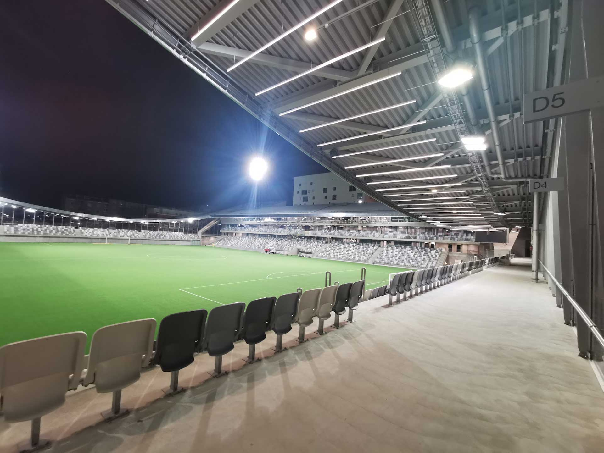

Puolenvaihto
Tammela Football Stadium, Tampere
2024
A site-specific DMX-controlled light installation
Custom made LED lights, DMX decoders, DMX nodes, a stand-alone engine, cabling
The commissioned site-specific light installation is based on football and the unique architecture of Tammela
Stadium, designed by JKMM Architects. The Finnish title of the work derives from football terminology and
translates as side change. The light installation consists of 208 five-meter-long DMX-controlled white LED
lights, hanging one meter below the outdoor canopy of the stadium.
Underneath the curved canopies of the end stands the lights are placed next to each other, with a 1.2 m gap
between each. Underneath both side canopies the lights are one after another in a straight line, connecting
the lights of both end canopies into one system. All in all, the installation is 80 m x 125 m in size.
The LED lights are programmed so that only one end of the field is active at a time, with seemingly random
back-and-forth movement from one side of the field to the other. At times the activity changes to the other
end by means of swift sweep along the linear row of lights underneath either one of the side stands. The idea
is to depict the constantly changing rhythm of the football game in an abstract way.
Through the glass facade at both ends of the stadium, the light installation is also visible from the street,
thus making it more public. The work is on in the evenings, even if there is no activity in the stadium.
